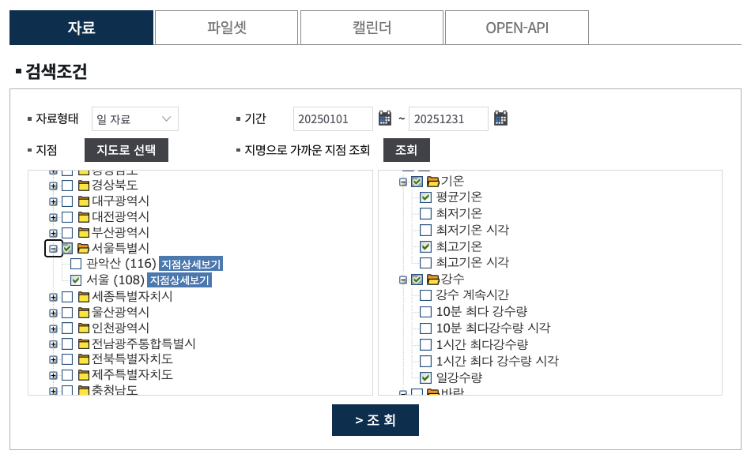

데이터셋 가져오기
질문에 맞는 공공데이터를 직접 찾아 내려받고, 노트북으로 읽어 들인다.
- 질문에 필요한 데이터가 무엇인지 말로 적을 수 있다.
- 공공데이터 포털에서 데이터를 찾고 설명서를 읽을 수 있다.
- 내려받은 CSV를 R과 Python에서 읽어 들이고 구조를 설명할 수 있다.
2.1질문에서 출발하기
이 가이드 전체가 답하려는 질문은 하나다. 비 오는 날, 더운 날에 지하철 승객은 어떻게 달라질까?
질문을 데이터의 말로 바꾸면 필요한 것이 보인다.
| 필요한 것 | 단위 | 찾을 곳 |
|---|---|---|
| 지하철을 탄 사람 수 | 날짜별, 역별, 가능하면 시간대별 | 서울 열린데이터광장 |
| 그날의 기온과 강수량 | 날짜별, 서울 | 기상청 기상자료개방포털 |
두 데이터에 공통으로 들어 있는 것은 날짜다. 4장에서 이 날짜를 열쇠로 두 표를 합친다. 그러려면 두 데이터의 기간이 같아야 한다. 이 가이드는 2025년 1월 1일부터 12월 31일까지 한 해를 쓴다.
2.2직접 찾아보기
지하철 승하차 인원
- 서울 열린데이터광장(data.seoul.go.kr)에서
지하철 승하차를 검색한다. - 비슷한 이름의 데이터가 여러 개 나온다. 아래 표를 보고 질문에 맞는 것을 고른다.
- “서울교통공사_역별 일별 시간대별 승하차인원 정보”의 파일내려받기에서 맨 위(첫 번째) 항목인 2025년 파일
서울교통공사_역별 일별 시간대별 승하차인원_20251231.csv(약 24MB)를 받는다.
| 데이터 이름 | 한 행의 단위 | 이번 질문에 |
|---|---|---|
| 지하철호선별 역별 승하차 인원 정보 | 날짜 × 역 (하루 합계) | 쓸 수 있지만 시간대가 없다 |
| 지하철 호선별 역별 시간대별 승하차 인원 정보 | 월 × 역 × 시간대 | 날짜가 없어 날씨와 합칠 수 없다 |
| 서울교통공사_역별 일별 시간대별 승하차인원 정보 | 날짜 × 역 × 승차/하차, 시간대는 열 | 이것을 쓴다 |
기온과 강수량
기상 자료는 기상청 기상자료개방포털에서 받는다. 회원 가입을 하고 로그인해야 파일을 내려받을 수 있다. 기상자료개방포털에 가입후 파일을 다운로드 받는다.
- 기상자료개방포털(
data.kma.go.kr)에 로그인한다. - 데이터 메뉴에서 기상관측 항목에서 지상 클리 후 종관기상관측(ASOS)에서 자료 탭을 연다.
- 검색조건을 아래 화면과 같이 고른다. 자료형태 일 자료, 기간 20250101 ~ 20251231. 지점은 서울특별시 앞의 +를 눌러 펼친 뒤 서울 (108) 하나만 체크한다. 관악산 (116)은 체크하지 않는다.
- 요소는 기온의 평균기온과 최고기온, 강수의 일강수량 세 가지만 체크한다.
- 조회를 누르면 화면 아래에 자료보기가 나타난다. 그 오른쪽의 CSV 버튼으로 내려받는다. 파일은
OBS_ASOS_DD_20261007222035.csv처럼OBS_ASOS_DD_뒤에 내려받은 시각과 일련번호가 붙은 이름으로 저장된다.

이 파일은 지금 열어 보지 않고 4장에서 읽는다. 하루가 한 행으로 365행이고, 열은 지점, 지점명, 일시, 평균기온(°C), 최고기온(°C), 일강수량(mm) 여섯 개다.
출처
- 서울교통공사, 「서울교통공사_역별 일별 시간대별 승하차인원 정보」 2025년 파일. 서울 열린데이터광장, data.seoul.go.kr/dataList/OA-12921.
- 기상청, 종관기상관측(ASOS) 일 자료, 서울(108) 지점, 2025-01-01~2025-12-31. 기상자료개방포털, data.kma.go.kr. 로그인한 뒤 내려받을 수 있다.
2.3데이터 설명서 읽기
파일을 받은 설명 페이지에서 아래 내용을 확인해 노트북 첫 셀에 적어 둔다. 숫자를 읽기 전에 그 숫자가 무엇인지부터 아는 것이다.
| 확인할 것 | 지하철 데이터 | 기상 데이터 |
|---|---|---|
| 무엇을 세거나 잰 것인가 | 시간대별로 역에서 타고 내린 인원 | 서울 관측소에서 잰 하루의 평균기온, 최고기온, 강수량 |
| 어떤 단위인가 | 날짜 × 역 × 승차/하차마다 한 행. 시간대 20개가 열로 펼쳐져 있다 | 날짜마다 한 행. 기온은 °C, 강수량은 mm |
| 어디까지 들어 있는가 | 서울교통공사가 운영하는 1~8호선 구간. 9호선과 코레일 구간은 없다 | 서울 (108) 지점 한 곳. 서울 전체의 평균이 아니다 |
| 언제 갱신되는가 | 1년에 한 번, 연도별 파일로 올라온다. 이 가이드는 가장 최근인 2025년 파일을 쓴다 | 기간을 직접 골라 받는다. 이 가이드는 2025년 한 해를 받았다 |
| 빈칸은 무엇을 뜻하는가 | 표 아래에 딸려 온 빈 행은 자료가 아니다(2.6에서 지운다) | 일강수량에 빈칸이 많다. 측정하지 못한 것인지 비가 오지 않은 것인지 설명에서 찾아 적어 둔다. 4장에서 쓴다 |
2.4파일을 프로젝트에 넣기
받은 파일을 dataset/raw에 넣는다. 원래 이름은 길거나 무엇이 들어 있는지 알기 어려우므로, 내용을 알 수 있는 이름으로 바꾼다. 내용은 건드리지 않는다. 엑셀로 열어서 저장하면 날짜와 숫자 형식이 바뀌거나 빈 행이 딸려 붙을 수 있다.
| 원래 이름 | 바꾼 이름 |
|---|---|
서울교통공사_역별 일별 시간대별 승하차인원_20251231.csv | seoul-subway-2025.csv |
OBS_ASOS_DD_20261007222035.csv(뒤의 숫자는 받은 시각과 일련번호라 사람마다 다르다) | seoul-temp-raining-2025.csv |
2.5노트북에서 읽어 들이기: 인코딩
컴퓨터는 글자를 숫자로 저장한다. 어떤 글자를 어떤 숫자로 적을지 정해 둔 약속을 인코딩이라고 한다. 한글 파일에서는 세 가지를 만난다.
| 인코딩 | 특징 | 주로 만나는 곳 |
|---|---|---|
| UTF-8 | 전 세계의 글자를 하나의 약속으로 적는다. 지금의 표준 | 웹, 최근 프로그램. R과 Python이 기본으로 가정하는 것 |
| EUC-KR | 한글을 위해 만든 오래된 약속 | 한국 공공데이터, 예전 시스템에서 내보낸 CSV |
| CP949 | EUC-KR에 글자를 더 넣은 Windows판. EUC-KR 파일은 CP949로도 읽힌다 | Windows의 한글 엑셀에서 저장한 CSV |
CSV 파일 안에는 자기가 어떤 인코딩인지 적혀 있지 않다. 읽는 쪽이 알려줘야 한다. 알려주지 않으면 R과 Python은 UTF-8이라고 가정한다. 이 지하철 파일은 EUC-KR이다. 기상청에서 받은 파일도 같다.
먼저 틀려 보기
인코딩을 알려주지 않고 읽으면 어떻게 되는지 한 번 확인해 둔다. 앞으로 자주 만날 오류다.
library(tidyverse)
read_csv("../dataset/raw/seoul-subway-2025.csv")
# 열 이름과 한글 값이 깨져 보이거나
# invalid multibyte string 오류가 난다import pandas as pd
pd.read_csv("../dataset/raw/seoul-subway-2025.csv")
# UnicodeDecodeError: 'utf-8' codec can't
# decode byte 0xbf in position 0: ...Python의 오류를 풀어 읽으면 “UTF-8 약속으로 읽으려 했는데, 맨 앞의 숫자부터 그 약속에 없는 값이다”라는 뜻이다. 파일이 망가진 것이 아니라 약속이 다른 것이다.
인코딩을 알려주고 읽기
subway <- read_csv( "../dataset/raw/seoul-subway-2025.csv", locale = locale(encoding = "EUC-KR") )
subway = pd.read_csv(
"../dataset/raw/seoul-subway-2025.csv",
encoding="euc-kr",
)encoding = "CP949", Python은 encoding="cp949".인코딩을 모를 때 알아내는 법
- 설명 페이지를 본다. 데이터 설명이나 공지에 적혀 있는 경우가 있다.
- VS Code로 열어 본다. 파일을 열면 오른쪽 아래 상태 표시줄에 인코딩(보통 UTF-8)이 나온다. 한글이 깨져 보이면 그 표시를 누르고 Reopen with Encoding(인코딩하여 다시 열기)에서 Korean (EUC-KR)을 골라 본다. 제대로 보이면 그것이 답이다. 보기만 하고 저장하지 않는다.
- R에게 추측을 시킨다.
guess_encoding("../dataset/raw/seoul-subway-2025.csv")이 가능성이 높은 순서로 알려준다. - 둘 중 하나다. 한국에서 만든 CSV는 대부분 UTF-8 아니면 EUC-KR(CP949)이다. 한쪽에서 실패하면 다른 쪽을 써 본다.
utf-8-sig를 쓴다.2.6첫인상 확인하기
읽어 들인 직후에는 항상 세 가지를 본다. 크기, 열의 자료형, 앞부분.
dim(subway) # 행 수, 열 수 glimpse(subway) # 열 이름과 자료형 head(subway) # 앞 6행
subway.shape # 행 수, 열 수 subway.info() # 열 이름과 자료형 subway.head() # 앞 5행
행 수는 199,424로 나온다. 그런데 이 파일은 표 맨 아래에 쉼표만 있는 빈 행이 딸려 있다. 날짜가 빈 행을 세어 보고(134행) 지운다. 지우고 나면 199,290행이다.
sum(is.na(subway$수송일자)) # 빈 행의 수 subway <- subway |> filter(!is.na(수송일자))
subway["수송일자"].isna().sum() # 빈 행의 수 subway = subway.dropna(how="all")
Python에서는 숫자가 411.0처럼 소수로 보인다. 빈 행 때문에 숫자 열이 실수형으로 읽힌 것이고, 계산 결과는 같다.
열은 26개다. 앞의 6개가 “무엇에 대한 행인가”를, 뒤의 20개가 시간대별 인원을 담는다.
| 연번 | 수송일자 | 호선 | 역번호 | 역명 | 승하차구분 | 06시이전 | 06-07시간대 | … | 23-24시간대 | 24시이후 |
|---|---|---|---|---|---|---|---|---|---|---|
| 1 | 2025-01-01 | 1호선 | 150 | 서울역 | 승차 | 411 | 317 | … | 838 | 29 |
| 2 | 2025-01-01 | 1호선 | 150 | 서울역 | 하차 | 261 | 715 | … | 455 | 130 |
| 3 | 2025-01-01 | 1호선 | 151 | 시청 | 승차 | 62 | 70 | … | 201 | 1 |
여기서 눈여겨볼 점이 세 가지 있다.
- 한 역의 하루가 두 행이다. 승차 한 행, 하차 한 행.
- 시간대가 옆으로 펼쳐져 있다. 이런 모양을 넓은 형식이라고 한다. 과제에서 긴 형식으로 바꾼다.
수송일자는2025-01-01모양이다. 날짜처럼 보이지만, 컴퓨터가 이것을 날짜로 알고 있는지 글자로 알고 있는지는 따로 확인해야 한다. 3장에서 다룬다.
2.7예고: API로 가져오기
지금은 사람이 누리집에서 파일을 내려받았다. API는 같은 일을 코드가 주소로 요청해서 받는 방법이다. 매일 새 자료를 받아야 할 때 쓴다.
| 파일 내려받기 | API | |
|---|---|---|
| 받는 방법 | 누리집에서 클릭 | 코드에서 주소로 요청 |
| 준비물 | 없음(또는 회원 가입) | 인증키 발급 |
| 형태 | CSV 파일 | JSON 또는 XML |
| 알맞은 경우 | 한 번 받아 분석 | 반복해서 최신 자료 받기 |
이 가이드에서는 API를 직접 쓰지 않는다. 한 가지만 미리 기억해 둔다. 인증키는 비밀번호와 같아서, 노트북이나 코드에 직접 적지 않는다.